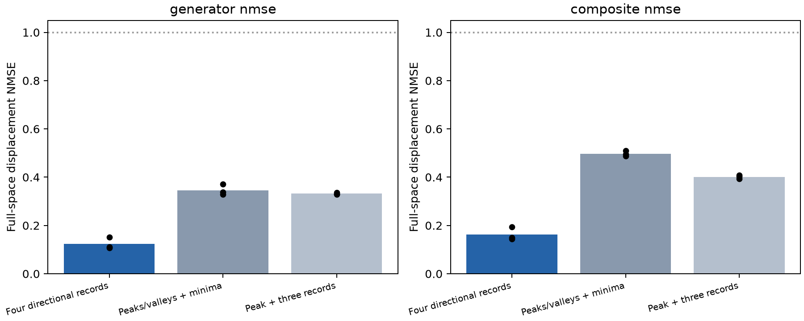

四方向记录组在三个新源种子的查询表征平均结果上，支持 4/4 项预先固定的预测。逐种子一致性、读出空间边界与源成绩差异见下表；这还不足以证明整个网络形成了完整群表示。
三个新源种子 2027/3037/4051 ×三个四任务组合，共九个源模型；每模型固定 20,000 步、256 万标签。探针输入是新的 588 个完整八操作轨道，与 129,864 个旧输入不重叠。1009 作为已知试验单独重测，不计入新源种子结果。
恒等预测为零变化，其归一化误差为 1。分母是真实隐藏变化量，而不是原始向量大小。只用拟合集计算长度均值和 PCA；验证集选岭强度。生成元分别拟合，复合词未拟合；行向量先 C 后 I 使用 zρ_Cρ_I。全部结果保留，不按源成绩或几何结果剔除种子。

结构最清楚地出现在任务查询表征。数字读出零空间的生成元/复合误差为 0.273/0.333，仍低于匹配随机模型 0.361/0.500，但不能排除非线性答案编码。无任务提示前缀为 0.399/0.643，高于随机模型 0.360/0.500；整体优势没有推广到这个位置。
| 组合 | 源任务准确率 | 生成元误差 | 随机生成元误差 | 未拟合复合误差 | 随机复合误差 | 错误配对误差 | 两次取逆恢复误差 | 错误顺序 − 正确顺序 |
|---|---|---|---|---|---|---|---|---|
| novel_records | 0.9467 | 0.1232 | 0.3615 | 0.1623 | 0.5001 | 0.6479 | 0.0583 | 0.7082 |
| novel_minima_pair | 0.9131 | 0.3460 | 0.3615 | 0.4971 | 0.5002 | 0.7130 | 0.6126 | 0.0341 |
| novel_peak_mixed | 0.9633 | 0.3323 | 0.3615 | 0.4016 | 0.5001 | 0.7451 | 0.4141 | 0.2826 |
测量前固定的四项预测：
| 预测 | 新种子结果 |
|---|---|
| lower_mean_generator_than_both_controls | True |
| lower_mean_composite_than_both_controls | True |
| lower_generator_and_composite_than_identity_shuffled_random | True |
| positive_wrong_order_gap | True |
逐源种子：
| 种子 | 记录组生成元误差 | 记录组复合误差 | 生成元优于两对照 | 复合优于两对照 | 两次取逆恢复误差 |
|---|---|---|---|---|---|
| 2027 | 0.1068 | 0.1436 | True | True | 0.0420 |
| 3037 | 0.1514 | 0.1941 | True | True | 0.0900 |
| 4051 | 0.1115 | 0.1493 | True | True | 0.0429 |
取逆单项与真实变化量：
| 组合 | 取逆预测误差 | 随机取逆误差 | 真实取逆变化能量/中心化表征能量 |
|---|---|---|---|
| novel_records | 0.1538 | 0.5078 | 1.0970 |
| novel_minima_pair | 0.5231 | 0.5079 | 1.3463 |
| novel_peak_mixed | 0.5341 | 0.5079 | 0.9496 |
两次取逆恢复误差以中心化原表征能量归一化；取逆预测以真实取逆变化量归一化，两者分母不同。恒等变换也能做到两次恢复，因此恢复误差必须与真实像预测、错误配对和错误顺序一起判断。这里的留出泛化是相同长度范围内的新完整轨道，不是未见长度。
查询向量是四个任务各自的等号位置隐藏向量拼接。数字读出空间由 31 个数字类别的中心化权重张成，每个任务块秩为 30。零空间保留数字类别 logit 差为零的方向，但可能仍含非线性答案编码。另报告数字 logits 与无任务提示的 ONE_END。完整维度敏感性不使用测试集搜索维度。
| 组合 | 表征/空间 | 生成元误差 | 复合误差 | 两次取逆恢复误差 | 顺序判别差 |
|---|---|---|---|---|---|
| novel_records | ONE_END | 0.3986 | 0.6433 | 0.6381 | 0.1238 |
| novel_records | source_query_concat | 0.1232 | 0.1623 | 0.0583 | 0.7082 |
| novel_records | source_query_numeric_contrast | 0.0965 | 0.1348 | 0.0419 | 0.7431 |
| novel_records | source_query_numeric_null | 0.2728 | 0.3331 | 0.2008 | 0.4224 |
| novel_records | source_query_numeric_logits | 0.0922 | 0.1127 | 0.0466 | 0.7247 |
| novel_records | ONE_END_full_width | 0.3668 | 0.6088 | 0.5452 | 0.1898 |
| novel_records | source_query_concat_full_width | 0.0921 | 0.1301 | 0.0514 | 0.7510 |
| novel_minima_pair | ONE_END | 0.4733 | 0.5877 | 0.8983 | 0.0134 |
| novel_minima_pair | source_query_concat | 0.3460 | 0.4971 | 0.6126 | 0.0341 |
| novel_minima_pair | source_query_numeric_contrast | 0.3390 | 0.4987 | 0.6319 | 0.0229 |
| novel_minima_pair | source_query_numeric_null | 0.3860 | 0.4994 | 0.5460 | 0.0724 |
| novel_minima_pair | source_query_numeric_logits | 0.3349 | 0.4834 | 0.6862 | 0.0330 |
| novel_minima_pair | ONE_END_full_width | 0.4473 | 0.5710 | 0.8415 | 0.0277 |
| novel_minima_pair | source_query_concat_full_width | 0.3291 | 0.4668 | 0.5035 | 0.0891 |
| novel_peak_mixed | ONE_END | 0.4281 | 0.5010 | 0.7791 | 0.0644 |
| novel_peak_mixed | source_query_concat | 0.3323 | 0.4016 | 0.4141 | 0.2826 |
| novel_peak_mixed | source_query_numeric_contrast | 0.3278 | 0.3980 | 0.4241 | 0.2845 |
| novel_peak_mixed | source_query_numeric_null | 0.3629 | 0.4275 | 0.3846 | 0.2456 |
| novel_peak_mixed | source_query_numeric_logits | 0.3204 | 0.3812 | 0.4284 | 0.2774 |
| novel_peak_mixed | ONE_END_full_width | 0.4002 | 0.4738 | 0.6865 | 0.1148 |
| novel_peak_mixed | source_query_concat_full_width | 0.2969 | 0.3396 | 0.3348 | 0.3619 |
以下把真实任务标签直接编码成数字或 one-hot，未使用神经模型。四方向记录任务本身在这些操作下封闭，精确答案已有可预测的关系；因此查询表征中出现关系不能单独证明一种新的内部计算机制。长度不超过 7 的全部排列已核验 17,736 个输入—操作对应，具体映射见任务闭合核验；有限穷举本身不作为对任意长度的证明。
| 组合 | 真实任务编码 | 生成元误差 | 复合误差 |
|---|---|---|---|
| novel_records | numeric | 0.0000 | 0.0000 |
| novel_records | onehot | 0.0000 | 0.0000 |
| novel_minima_pair | numeric | 0.2713 | 0.4476 |
| novel_minima_pair | onehot | 0.2745 | 0.4702 |
| novel_peak_mixed | numeric | 0.2314 | 0.2884 |
| novel_peak_mixed | onehot | 0.3063 | 0.4051 |
此前实验的 P 是固定维度坐标置零，满足 P²=P；真正删除坐标会改变维度，不能使用这个等式。多项式截断 P_k 也保留固定系数空间，求导 D 与截断满足 D P_k=P_(k−1)D（k≥1）。在次数 0 至 8 上，375 项整数矩阵规律已精确核验；本轮没有训练多项式神经模型。另复用了有限域模型做求导—截断补充探针：P 组整体优势未复现，不能作为独立领域的正面确认。